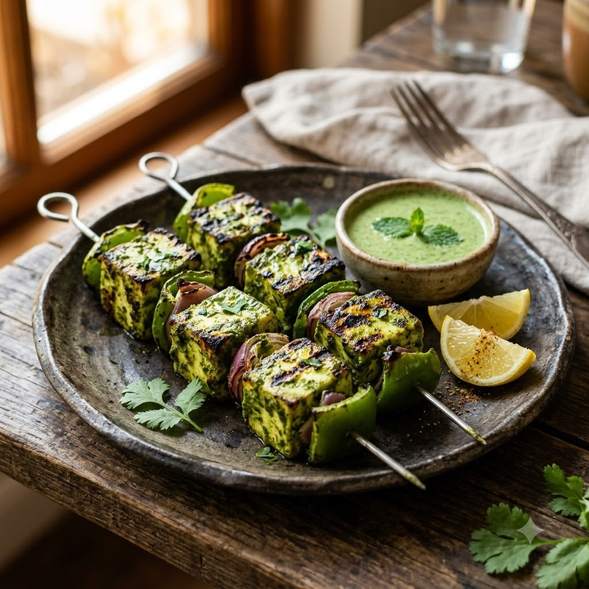

Hariyali Paneer Tikka (Green Herb Marinade)

Hariyali Paneer Tikka (Green Herb Marinade)
Airfryer – Grill 200°C 13 min — Serves 4
Gluten-Free • Vegetarian • High-Protein • Everyday
🔥 Airfryer🍽 Serves 4
Prep ahead: Marinate the paneer and vegetables for at least 30 minutes, up to 2 hours in the fridge, for the best flavour.
Ingredients
- 400g paneer, cubed
- 1/2 cup thick yogurt
- 1 cup mint & coriander leaves (hara dhania)
- 2 green chillies (hari mirch)
- 1 tbsp ginger-garlic paste (adrak-lehsun paste)
- 1 tsp garam masala
- 1 tbsp mustard oil (sarson ka tel)
- Bell peppers & onion, cubed
- Salt to taste
- Lemon wedges to serve
Method
1Preheat: Preheat the Airfryer to 200°C for 4 minutes before adding the food to the basket.
2Blend mint, coriander and green chillies with a splash of water into a smooth paste.
3Whisk the green paste into the yogurt with ginger-garlic paste, garam masala, mustard oil and salt.
4Marinate the paneer and vegetables in this mix for at least 30 minutes.
5Skewer or arrange in the basket; grill at 200°C for 13 minutes, turning once, until lightly charred at the edges.
6Serve with lemon wedges and extra mint chutney.